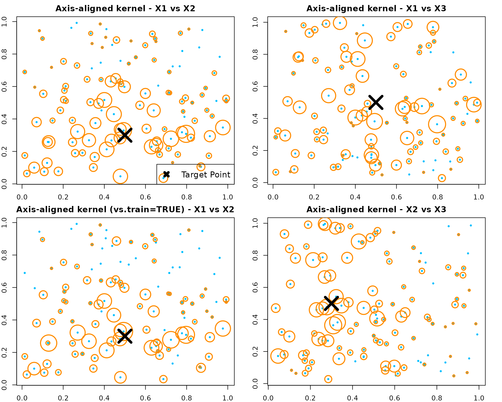
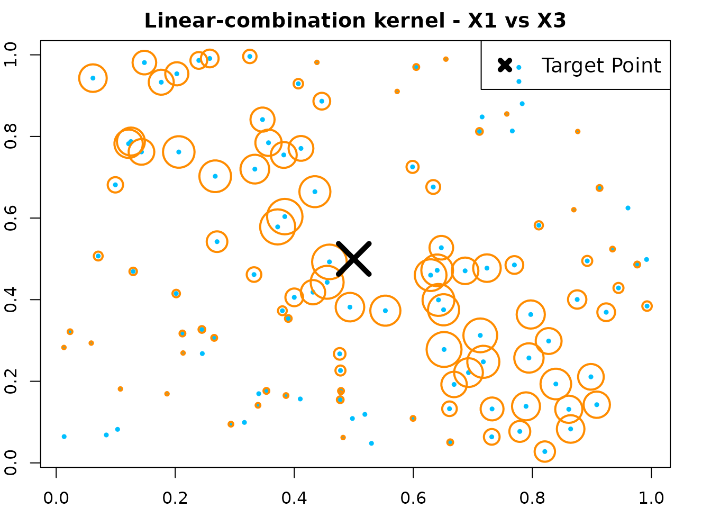

Random Forest Kernel - Tutorial (RLT)
Ruoqing Zhu
Last Updated: October 26, 2026
Source:vignettes/articles/feature-kernel.Rmd
feature-kernel.RmdOverview
The random forest kernel describes which observations a fitted forest
groups together. In the ordinary mode of forest.kernel(),
each matrix entry counts the trees in which the corresponding pair
shares a terminal node. These raw counts are not normalized observation
weights for a forest prediction.
With both X1 and X2, the result has one row
per observation in X1 and one column per observation in
X2. Omitting X2 gives a self-kernel for
X1.
Example 1 - Axis-aligned
We fit a regression forest with single-variable splits and compute
leaf-sharing counts between a target point and the training
observations. Setting nsplit = 0 searches all available
cutpoints.
This example also uses vs.train = TRUE. That mode
weights each tree’s leaf-sharing indicator by the reference
observation’s in-bag multiplicity in that tree. It requires
resample.track = TRUE when fitting and the original
training data, in their original row order, as X2.
# ---- Generate a small dataset (about 100 obs) ----
set.seed(1)
n <- 120; p <- 5
X <- matrix(runif(n * p), n, p)
y <- X[, 1] + X[, 2] + rnorm(n)
# Train the forest with axis-aligned splits
library(RLT)
fit_rect <- RLT(
X, y, model = "regression",
ntrees = 300, mtry = p, nmin = 5,
nsplit = 0,
resample.prob = 0.8, resample.replace = TRUE,
param.control = list("resample.track" = TRUE),
ncores = 1,
verbose = FALSE
)
# Choose a target point
newX <- matrix(c(0.5, 0.3, 0.5, 0.5, 0.5), 1, p)
# Leaf-sharing tree counts between newX and all X
KW_rect <- forest.kernel(fit_rect, X1 = newX, X2 = X)$Kernel
# Rescale counts only to set circle sizes in the plots
size_scale <- 10 * sqrt(KW_rect / sqrt(sum(KW_rect^2)))
op <- par(mfrow = c(2, 2), mar = c(2, 2, 2, 2))
# X1 vs X2 (both are signal features)
plot(X[, 1], X[, 2], col = "deepskyblue", pch = 19, cex = 0.5,
main = "Axis-aligned kernel - X1 vs X2")
points(X[, 1], X[, 2], col = "darkorange", cex = size_scale, lwd = 2)
points(newX[1], newX[2], col = "black", pch = 4, cex = 4, lwd = 5)
legend("bottomright", "Target Point", pch = 4, col = "black", lwd = 5, lty = NA, cex = 1.2)
# X1 vs X3 (X3 is noise)
plot(X[, 1], X[, 3], col = "deepskyblue", pch = 19, cex = 0.5,
main = "Axis-aligned kernel - X1 vs X3")
points(X[, 1], X[, 3], col = "darkorange", cex = size_scale, lwd = 2)
points(newX[1], newX[3], col = "black", pch = 4, cex = 4, lwd = 5)
# Weight leaf sharing by each training observation's in-bag multiplicity
KW_rect_train <- forest.kernel(fit_rect, X1 = newX, X2 = X, vs.train = TRUE)$Kernel
size_scale_train <- 10 * sqrt(KW_rect_train / sqrt(sum(KW_rect_train^2)))
plot(X[, 1], X[, 2], col = "deepskyblue", pch = 19, cex = 0.5,
main = "Axis-aligned kernel (vs.train=TRUE) - X1 vs X2")
points(X[, 1], X[, 2], col = "darkorange", cex = size_scale_train, lwd = 2)
points(newX[1], newX[2], col = "black", pch = 4, cex = 4, lwd = 5)
# Another projection
plot(X[, 2], X[, 3], col = "deepskyblue", pch = 19, cex = 0.5,
main = "Axis-aligned kernel - X2 vs X3")
points(X[, 2], X[, 3], col = "darkorange", cex = size_scale, lwd = 2)
points(newX[2], newX[3], col = "black", pch = 4, cex = 4, lwd = 5)
par(op)The panels show leaf sharing with the target at
(X1, X2, X3) = (0.5, 0.3, 0.5). Orange circle size
increases with the count. Compare the two X1/X2 panels to see the effect
of in-bag multiplicity; the projections containing the noise variable X3
spread the highlighted observations along a direction that does not
contribute to the simulated response. These are projections of a
five-dimensional kernel, so distance to the cross in one panel does not
fully determine leaf sharing.
The size_scale calculations rescale each kernel vector
for plotting. They do not change the returned counts or produce
prediction weights. Because each vector is rescaled separately, circle
sizes across panels should be read relative to the other circles in the
same panel.
Example 2 - Linear-combination
We next use sliced inverse regression (SIR) to estimate predictor
directions for linear-combination splits. Setting
linear.comb = 2 permits up to two variables in a direction,
and nsplit = 3 compares three random candidate cutpoints
along it.
This is a separate simulation with a different response, noise level, and resampling scheme. The two examples illustrate kernel structure, rather than provide a controlled comparison of split methods.
set.seed(1)
n <- 120; p <- 5
X <- matrix(runif(n * p), n, p)
y <- X[, 1] + X[, 3] + 0.3 * rnorm(n)
fit_lc <- RLT(
X, y, model = "regression",
ntrees = 300, mtry = p, nmin = 5,
nsplit = 3,
resample.prob = 0.9, resample.replace = FALSE,
linear.comb = 2, linear.comb.method = "sir",
ncores = 1,
verbose = FALSE
)
newX <- matrix(c(0.5, 0.3, 0.5, 0.5, 0.5), 1, p)
KW_lc <- forest.kernel(fit_lc, X1 = newX, X2 = X)$Kernel
size_scale_lc <- 10 * sqrt(KW_lc / sqrt(sum(KW_lc^2)))
par(mar = c(2, 2, 2, 2))
plot(X[, 1], X[, 3], col = "deepskyblue", pch = 19, cex = 0.5,
main = "Linear-combination kernel - X1 vs X3")
points(X[, 1], X[, 3], col = "darkorange", cex = size_scale_lc, lwd = 2)
points(newX[1], newX[3], col = "black", pch = 4, cex = 4, lwd = 5)
legend("topright", "Target Point", pch = 4, col = "black", lwd = 5, lty = NA, cex = 1.2)
Here the response depends on the sum of X1 and X3. The plot shows which observations share terminal nodes with the target across the forest. Linear-combination splits can group observations along an oblique direction, so a large leaf-sharing count does not require each coordinate to be close to the target separately.
OOB Self-kernel
The separate oob = TRUE mode uses only trees in which
both observations are out of bag. It requires retained resampling
records and the original training data as X1, with
X2 omitted. Unlike the ordinary counts shown above, its
Kernel is normalized by the number of trees where both
observations are OOB. The returned C and N
matrices contain the leaf-sharing and joint-OOB counts; see forest.kernel().